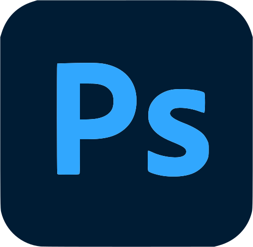
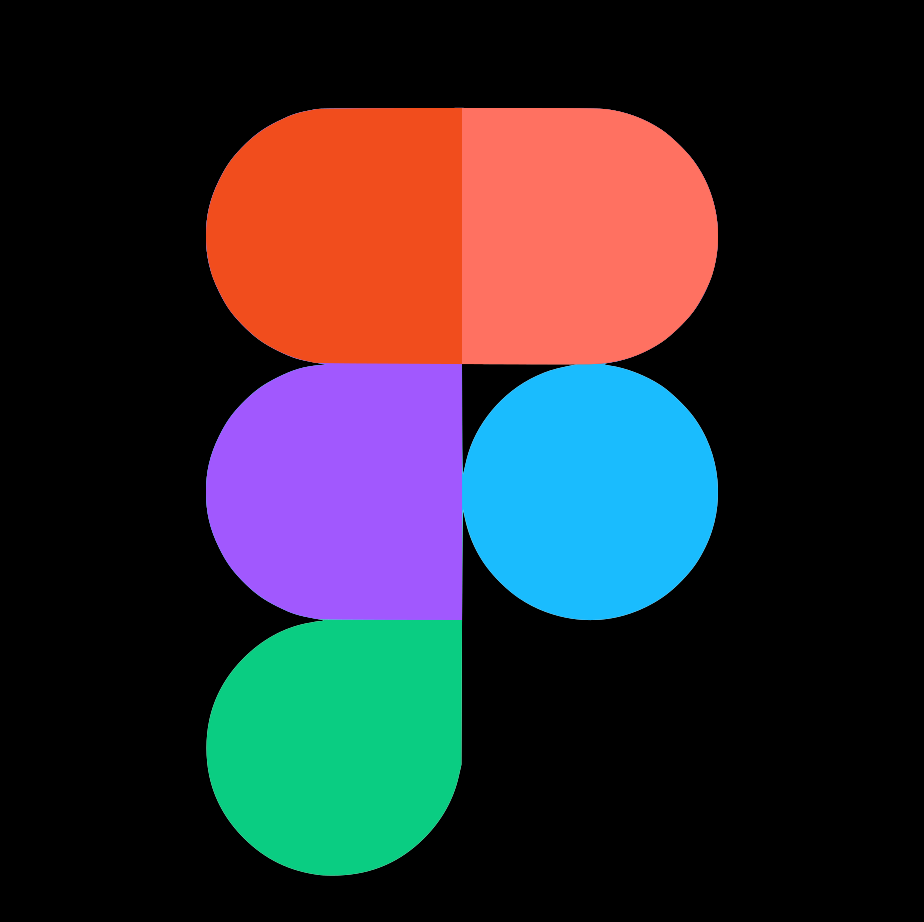

¿Quien soy?
Soy estudiante de Diseño Gráfico y Multimedia con un gran interés en
el diseño 3D. Me considero una persona creativa, comprometida y con
facilidad para trabajar en equipo, siempre enfocada en ofrecer
resultados profesionales.
Me adapto con soltura a distintos tipos de proyectos, desde el
desarrollo de páginas web hasta la creación de renders 3D o la
maquetación editorial. Disfruto enfrentándome a nuevos retos y
aprendiendo constantemente, lo que me permite tener una visión
versátil del diseño. Mi principal valor es el entusiasmo con el que
afronto cada proyecto y mi curiosidad por explorar diferentes áreas.
No busco ser experto en un solo campo, sino entender y desenvolverme
en múltiples disciplinas para aportar soluciones más completas y
creativas.
Experiencia
Mayo 2024 - actualidad Diseñador gráfico freelance
Diseño de material gráfico para bandas y artistas musicales (“Señora
Mayor”, “Trailer Park Band”, “Brittany Perkins”)
Septiembre 2023 - Abril 2024 Profesor de clases particulares
Madrid Clases de dibujo técnico a alumnos de primero y segundo de
bachillerato.
Junio 2024 Personal de figuración
Agendia Penelope , Madrid Actuación como extra en la serie “Isla Brava”.
Actualidad - Diseño gráfico y maquetación
Cuquerella Medical, Madrid Maquetación de manuales y presentaciones para
eventos médicos
Habilidades


Hobbies